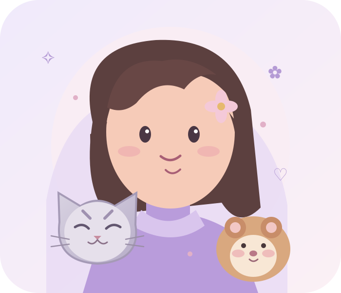
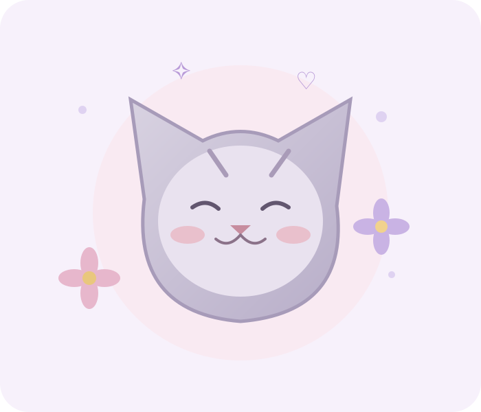
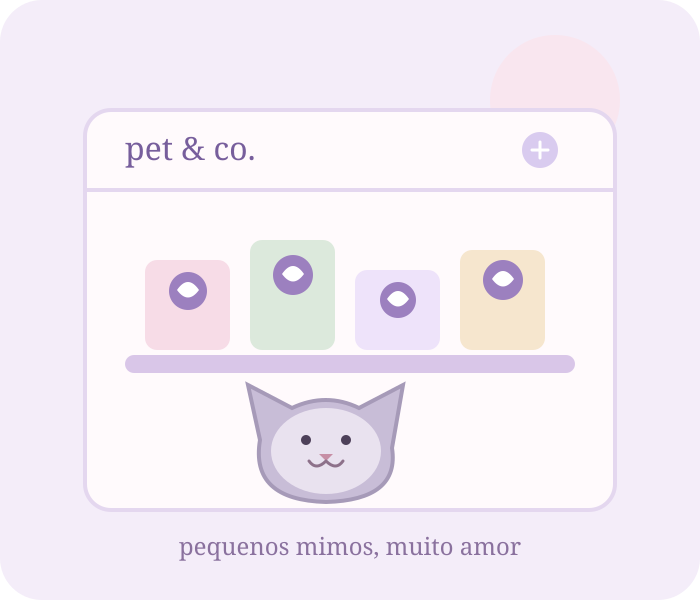
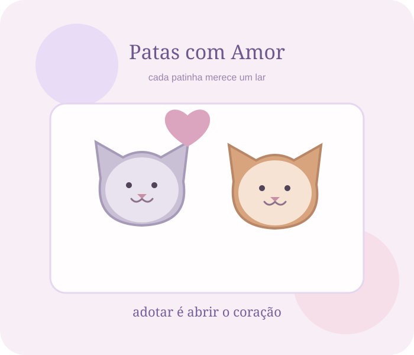
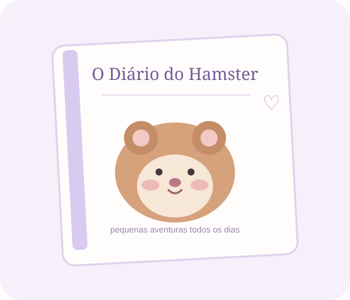
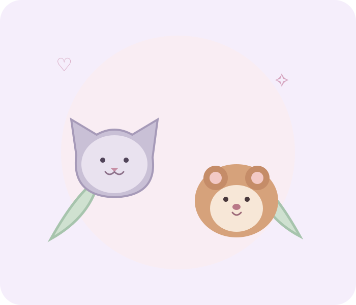
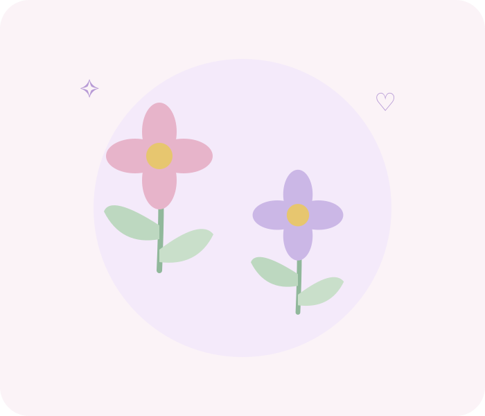
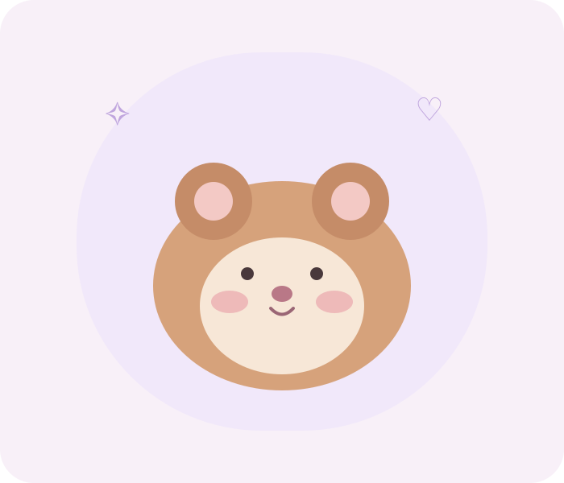
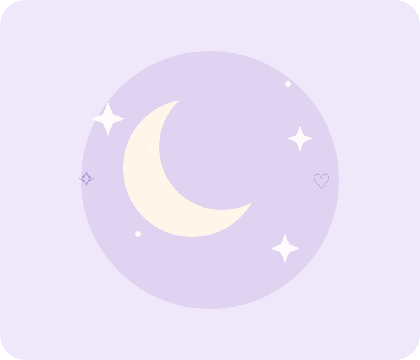

HTML5
A estrutura das páginas: conteúdo organizado, elementos semânticos e acessibilidade básica.
Em aprendizagem
Portfólio pessoal · Edição Web
A aprender, a criar e a dar vida a ideias.
Um pequeno mundo onde a tecnologia encontra a imaginação, com um toque de lilás, muitas ideias e inspiração no reino animal.

little things, big ideas ✦ ♡ criatividadeUm bocadinho de mim
Gosto de ideias com personalidade e de pequenos detalhes que fazem a diferença.

Olá! Sou a Claudia e estou a descobrir o mundo da Edição Web. Gosto de explorar ideias, experimentar combinações de cores e transformar inspirações em páginas digitais.
Estou a aprender HTML, CSS e Bootstrap, passo a passo. Este portfólio é um espaço para mostrar essa evolução, praticar o que aprendo e dar forma ao meu lado artístico.
Fora do ecrã, os animais, especialmente gatos e hamsters, são uma das minhas grandes fontes de ternura e inspiração.
A minha caixa de ferramentas
As ferramentas que estou a explorar para transformar ideias em experiências digitais.
A estrutura das páginas: conteúdo organizado, elementos semânticos e acessibilidade básica.
Cores, tipografia, espaçamentos e layouts que dão personalidade e coerência visual a um site.
Componentes e grelhas responsivas para adaptar páginas a telemóveis, tablets e computadores.
Pequenas ideias, grandes mundos
Conceitos fictícios criados para praticar estrutura, estilo e composição web.

01Uma loja imaginária de acessórios e pequenos mimos para animais, com uma experiência acolhedora.

02Uma página fictícia de adoção responsável, pensada para aproximar animais e futuras famílias.

03Um mini blogue ilustrado com curiosidades, cuidados básicos e momentos fofos de um hamster.
O meu pequeno mundo
Os animais trazem alegria e inspiração às minhas ideias. Gosto de imaginar mundos ilustrados, brincar com cores suaves e reparar nos pequenos detalhes que tornam cada coisa especial.

Inspiração visual
Uma pequena galeria de ilustrações que combina com o meu universo criativo.



A última página, não a última ideia
Adoro descobrir novas ideias e aprender coisas diferentes. Este formulário é apenas uma demonstração visual do projeto.